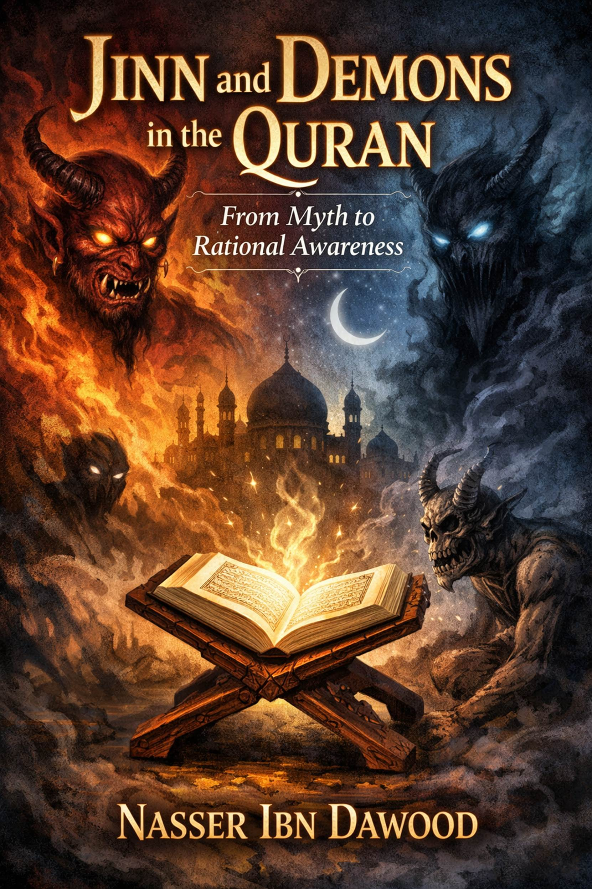

**Author: Nasser Ibn Dawood**
**Original Arabic Edition: 2025**
**Concise English Version: January 2026**
**Length: Approximately 35 pages (estimated in standard formatting)**
This concise version summarizes the key ideas of the original book, focusing on interpretive meanings rather than literal translation. It is designed for non-Arabic readers interested in Islamic studies, philosophy, and rational theology. The aim is to liberate Quranic concepts from folklore and superstition, presenting a reasoned understanding rooted in the Quran's language and context. References to scholars like Samer Islambouli are preserved for authenticity.
---
Dear Reader,
In today's world, where folklore blends with religious narratives, concepts like "jinn" and "demons" often evoke terror—shadowy beings lurking in the dark, possessing humans, or controlling fates. From ancestral tales of ghouls to modern horror films, these ideas have become sources of fear rather than reflection. But does this reflect the Quran's true message? Or is it a accumulation of cultural myths over centuries?
In this book, *Jinn and Demons in the Quran: From Myth to Rational Awareness*, I invite you on a journey to rediscover these concepts through the Quran itself. We won't rely on oral traditions or superficial interpretations but on Arabic linguistics and Quranic contexts. Here, "jinn" symbolizes hidden aspects and the human psyche, not supernatural horrors. Demons represent rebellion and temptation that may lurk within us all.
We'll correct misconceptions step by step: starting with a methodological framework, exploring linguistic roots, diverse Quranic meanings, and practical applications in daily life. The second part focuses on Iblis (Satan) as a symbol of arrogance and human trials, with contemporary readings that bring the Quran closer to our reality.
This book is not just for scholars but for anyone seeking logical answers to age-old questions: Why did Iblis refuse to bow? What role do demons play in our lives? How do we guard against whispers without falling into superstition? I present various theses based on texts, but you retain the freedom of opinion—the Quran calls for contemplation, not stagnation.
This work distinguishes between faith in the unseen and turning the unseen into a tool for disabling awareness. I hope it helps you replace fear with consciousness and responsibility, as God intends. Welcome to this journey!
Nasser Ibn Dawood, 2025
---
This series stems from the conviction that the Quran cannot be reduced to one reading; its meanings are inexhaustible. Engaging with its core concepts requires an open epistemological horizon, preserving definitive texts while allowing legitimate human interpretation.
The series presents multiple theses on Quranic themes like the unseen, humanity, and divine laws. Approaches vary not to confuse truths but to train the mind in discernment, referring opinions back to their roots and weighing them by the Quran's scale, not habit or fear.
Readers are not expected to accept these as final results but as paths of thought to test for harmony with the text, context, and the Quran's overall balance. Understanding is a practiced responsibility, as the Quran repeatedly commands contemplation.
This series neither produces packaged certainty nor dismantles heritage under the guise of renewal. It rebuilds our relationship with the Quran as a living reference, addressing the mind and heart, calling for reflection as much as obedience. The reader is a partner in comprehension, not a passive recipient, responsible for favoring what aligns with the balance.
Disciplined disagreement within the series is not a flaw but part of its purpose: listen, then follow the best.
---
1. Correcting Misconceptions about Jinn and Demons
2. Jinn Between Text and Interpretation: A Methodological Framework
3. Demons in the Quran: Who Are They and What Is Their Reality?
4. Linguistic Roots: Are Jinn Supernatural Beings?
5. Jinn in the Quran: Semantic Flexibility and Multiple Contexts
6. Ifrits in the Quran: Are They Truly Terrifying Demons?
7. Iblis: Symbol of Arrogance and Human Testing
8. Contemporary Readings and Modern Myths
9. Conclusion: Toward Rational Consciousness
10. Appendices: Methodological Insights and Critical Matrix
---
Before diving into "jinn" as depicted in the Quran, we need a methodological framework. Ideas about jinn, as noted by scholar Samer Islambouli, are not core pillars of faith or righteous actions that directly organize human relations. They fall outside "religion" in its definitive doctrinal sense, allowing diverse views.
The understanding presented here is not 100% certain; research relies on available indicators. Rigidity in one interpretation isn't proof, especially for concepts with deep linguistic and intellectual dimensions.
There's no dispute that "jinn" and derivatives (like "jin" and "jan") appear in the Quran—a whole surah is named "Al-Jinn," and verses mention a group of jinn listening to the Quran. The debate is about interpretation, not presence. Relying on popular or traditional meanings without delving into language and contexts is superficial.
To understand "jinn" deeply, Islambouli suggests "reciting" all texts on human and jinn creation—gathering related verses and studying them as a unified whole. This is like assembling a puzzle; isolating one piece leads to errors, akin to quoting "Woe to those who pray" out of context, fragmenting the Quran.
Islambouli views humans as dual:
- **Biological Dimension (Physical)**: Created from earth and water (clay), evolving organically. Uncontested.
- **Psychic Dimension (Spiritual/Energetic)**: The "soul" that makes us sentient, discerning beings. This is "jan" in "He created jan from a flame of fire" (Ar-Rahman: 15)—describing the soul as hidden energy, not literal fire.
"Jinni" as Acquired Trait vs. "Jinn" as Inherent Soul Trait
Distinction:
- **Jinni (Acquired)**: A person's life becomes hidden, like a powerful figure secluded from the public. Temporary.
- **Jinn (Inherent)**: The soul's natural hiddenness, invisible essence dwelling in the body. Permanent, like angels who are also "jinn" (hidden) created from energy.
In this dual view, Iblis's refusal to bow to Adam:
- Iblis boasts of his fiery (soul/energy) creation, ignoring his earthly body.
- For Adam, he mentions only clay, ignoring the fiery soul.
- Truth: Both are from fire (soul) and earth (body).
- Dialogue ends in expulsion due to stubbornness, like boasting white blood cells while ignoring red ones in another.
Denying the Mythical "Ghostly Jinn"
Islambouli rejects the mythical ghostly jinn as a product of human imagination across cultures. Only atheists (denying the unseen) or materialists (reducing soul to brain chemistry) escape this belief, often to avoid faith in the unseen and Creator.
This rational approach invites further exploration. Refer to Islambouli's lectures and books like *Human Study of Spirit, Soul, and Thought* (chapter on jinn) and *Scientific Arabic and Its Universality*.
---
"Shaytan" (Satan) and "shayateen" (demons) evoke dread, linked to evil and seduction. But does this stereotype match the Quran? Islambouli's linguistic-contextual analysis reveals deeper dimensions beyond traditional images.
Linguistic and Terminological Meaning
- **Linguistically**: From root (sh-t-n), meaning distance, rebellion from truth/good. E.g., "shatana" = distanced/rebelled; deep well = shatoon.
- **Quranically**: "Shaytan" is a descriptor for any rebel, whether human (ins) or jinn (hidden soul/forces). Represents forces calling to corruption, blocking truth.
Distinction: Demon as Trait vs. Iblis as Symbol
- **Shaytan (Trait)**: General for rebellion, calling to evil. Can apply to humans or souls.
- **Iblis (Symbol)**: Specific entity who refused to bow to Adam, vowing to mislead. Archetype of pride and disobedience.
Demons in the Quran: From Humans and Jinn (Souls)
Quran states demons can be from ins (humans) and jinn, cooperating in deception:
"And thus We have made for every prophet an enemy—demons from mankind and jinn, inspiring to one another decorative speech in delusion..." (Al-An'am: 112).
Jinn here as rebellious human souls or hidden evil forces.
Rebellious humans promoting corruption: tyrants, extremists, promoters of destructive ideas, exploiters. They operate via lies, embellishing falsehood, inciting desires, media manipulation.
Rebellious human psyches or covert groups: whispers (negative thoughts), vices like envy/pride, secret organizations plotting harm.
Human demons execute whispers from jinn demons (inner urges/hidden influences), spreading corruption.
Demons aren't just scary hidden beings but any force of rebellion—internal (self) or external (others/hidden powers). This awareness empowers confrontation.
---
"Jinn" evokes mystery and supernatural entities in popular imagination. But linguistic roots, tied to physical observations as per Islambouli, suggest otherwise.
Core meanings: hiding, veiling. Examples:
- **Janin**: Fetus hidden in womb.
- **Junnah**: Shield/armor concealing warrior.
- **Junoon**: Madness as veiled mind.
- **Janan**: Heart, hidden in chest.
- **Jannah**: Garden with dense trees concealing inside; Paradise as unseen.
- Night "janna" upon one: Conceals in darkness.
All rooted in observable concealment.
- Lisan al-Arab: Jinn named for concealment from humans.
- Al-Qamus al-Muhit: Opposite of ins (visible), due to hiding.
- Taj al-Arus: Anything concealed.
- Muqayis al-Lughah: From "concealment," unseen.
Not limited to supernatural; includes anything hidden.
Folklore exaggerated jinn into mythical beings via oral tales, confusing religion with superstition, literal interpretations.
Roots reveal "jinn" as broad concealment, freeing us from narrow myths. Sets stage for Quranic exploration.
---
Quran uses "jinn" flexibly, beyond folklore, aligning with linguistic roots.
- **General Concealment/Unknown Groups**: "We directed to you a company of jinn listening to the Quran..." (Al-Ahqaf: 29). Possibly hidden human groups or strangers.
- **Human
Soul (Hidden Aspect)**: Addresses "jinn and ins" as soul
(hidden/mind) and body (visible). E.g., "O company of jinn and mankind, if
you are able to pass beyond the regions of the heavens and earth..."
(Ar-Rahman: 33)—challenging human duality.
- **Angels (Hidden Beings)**: "They have made between Him and the jinn a lineage..." (As-Saffat: 158)—jinn as angels claimed as God's daughters.
- **Intense Darkness**: Night "janna" upon Abraham (Al-An'am: 76).
- **Fetus**: "You were ajinnah in your mothers' wombs" (An-Najm: 32).
- **Madness**: "Is there in their companion madness?" (Al-A'raf: 184).
- **Powerful Hidden Beings**: "An ifrit from the jinn said..." (An-Naml: 39)—strong, concealed experts.
Quran integrates jinn with humans in address, suggesting interplay—jinn as psyche or hidden powers influencing society.
Quran expands "jinn" to soul, hidden forces, states of concealment. Liberates from rigid views, linking unseen to seen via logic.
---
(Note: This chapter is condensed as it overlaps with prior themes.)
"Ifrit" appears once: Solomon's court, where an ifrit offers to bring the Queen of Sheba's throne swiftly (An-Naml: 39).
Linguistically: From (a-f-r), meaning dust, cunning, strength. Not inherently demonic but powerful, hidden entity—possibly a skilled human or symbolic force.
Popular myths portray ifrits as fiery demons, but Quran shows them as capable servants, not horrors. Rejects fear-based views, emphasizing utility in divine narratives.
---
Introduction
Iblis, often equated with Satan, is central to understanding rebellion.
Iblis's Story: Refusal to Bow
Commanded to prostrate to Adam, Iblis refuses: "I am better than him; You created me from fire and him from clay" (Al-A'raf: 12).
Islambouli: Iblis ignores shared duality (fire/soul + clay/body), symbolizing arrogance—selective truth, pride in origin.
Iblis as Test
Granted respite, Iblis vows to tempt humans except sincere servants (Al-Hijr: 36-40). Represents internal/external trials testing free will.
Modern Implications
Iblis symbolizes cognitive arrogance—refusing holistic truth. In daily life, guard against whispers via Quran, self-awareness.
---
Dismantling Modern Superstitions
Today, jinn/demons explain mental issues, failures via possession myths. Media amplifies "space jinn" or alien analogies.
Quranic criterion: Reject fear-mongering; unseen builds responsibility, not paralysis.
Critical Matrix (Summary from Appendix)
- **Linguistic Reading**: Jinn as descriptor of hidden, not independent species. Strong in language, needs context.
- **Functional Reading**: Demons as ethical functions. Enhances accountability.
- **Historical Hypotheses**: Jinn as pre-Adam humans. Speculative, lacks direct text.
- **Symbolic Reading**: Jinn as consciousness levels. Useful for reflection, avoid esotericism.
Aim: Balanced awareness, not denial or exaggeration.
---
Misunderstanding jinn/demons stems from epistemological and social mechanisms mythologizing the unseen, hindering progress. Through linguistics and context, jinn = concealment/soul; demons = rebellion trait; Iblis = arrogance symbol in divine tests.
This approach opens future research in Islamic studies, countering fear narratives. Rational awareness is essential for liberating humanity from stagnation, building societies on divine laws, not myths.
The Quran inspires endless contemplation—transform the unseen from terror to light guiding humanity's ascent.
---
Governed by: Quran's primacy, language over later terms, context as meaning regulator, distinguishing unseen from myth, reason as partner, consciousness over fear.
Evaluates modern readings by harmony with Arabic, Quranic context, promoting responsibility.
As above in Chapter 7.
Appendix 4: Jinn Between Unseen and Balance
Fear from jinn reveals knowledge imbalance. Differences in creation mean varied consciousness. Unseen as intermediary realm; distinguish soul, imagination, external influence.
Jinn are accountable but justly per their nature. Understanding reveals more about humans than jinn—mirror for handling the unknown.
From myth to awareness: A Quranic journey into jinn and demons. Nasser reverts to Arabic roots and texts, portraying jinn as hidden psyche symbols, demons as rebellion, Iblis as pride test. Debunks modern myths like space jinn, calling for consciousness blending faith and reason.
"This book isn't debate's end but liberation's start."
---
Nasser Ibn Dawood: Civil engineer specializing in metals, born Morocco
1960. Dedicated to Quranic linguistics and digital manuscripts. His digital
library (52 books by 2026) focuses on "Quranic Tongue" as
self-contained system, free from institutional bias.
Inspired by scholars like Samer Islambouli and channels promoting rational contemplation.
**Final Note**: This concise
version captures essence; for full depth, consult original. Updated January 26,
2026.
Book Title:
Jinn and Demons in the Quran: From Myth to Rational Awareness
Author:
Nasser Ibn Dawood
Publication Date:
2025 (Original Arabic), January 2026 (Concise English Edition)
Genre:
Religion & Spirituality, Islamic Studies, Philosophy
Book Cover:
Description:
In a world where folklore intertwines with religious narratives, concepts like "jinn" and "demons" often inspire fear rather than reflection. This groundbreaking book by Nasser Ibn Dawood invites readers on a journey to rediscover these ideas through the Quran itself, stripping away centuries of myths and superstitions.
Drawing on linguistic roots and Quranic contexts, "jinn" is reinterpreted as symbols of hidden aspects of the human psyche, while "demons" represent internal rebellion and temptation. Explore key questions: Why did Iblis refuse to bow? How do we combat whispers without succumbing to fear?
This concise edition, tailored for global readers, distinguishes faith in the unseen from paralyzing superstition, promoting rational awareness and personal responsibility. Perfect for scholars, seekers, and anyone curious about Islamic metaphysics.
"A liberating read that transforms fear into enlightenment." – Inspired by Quranic contemplation.
About the Author:
Nasser Ibn Dawood is a civil engineer specializing in metals, born in Morocco in 1960. With a passion for Quranic linguistics and rational theology, he has authored a digital library of 52 books focused on reinterpreting Islamic concepts through a modern, evidence-based lens. His work emphasizes the "Quranic Tongue" as a self-contained system, free from institutional biases, and draws inspiration from scholars like Samer Islambouli.
Available Formats:
Keywords:
Quran, Jinn, Demons, Islamic Philosophy, Rational Faith, Myth Busti